Planejamento do app para avaliação · Autor: Petterson Teixeira
Por que você está recebendo isto? Antes de começar a programar, preciso de uma crítica sincera sobre o que planejei. São uns 10 minutos: leia o resumo, olhe as telas e responda às perguntas da última página. Pode apontar problemas sem medo, é justamente para melhorar. A parte técnica (seção 11) é opcional, só para quem é da área.
Um app que abre no celular, pelo navegador e sem instalar nada pela loja de apps, para uma loja de cupcakes gourmet vender pela internet. O cliente escolhe os cupcakes, personaliza, paga e acompanha a entrega. A loja cadastra os produtos e cuida dos pedidos.
A loja já teve uma experiência ruim com outro fornecedor, que entregou um app diferente do que ela precisava. Por isso, o foco deste projeto é deixar tudo bem definido antes de programar.
| Quem | O que pode fazer |
|---|---|
| Visitante (sem conta) | Ver a vitrine, filtrar, ver detalhes, montar o carrinho e consultar o frete pelo CEP |
| Cliente (com conta) | Tudo do visitante + cadastrar endereços, pagar, acompanhar pedidos e ver o histórico |
| Administrador da loja | Cadastrar e editar cupcakes, controlar o estoque e cuidar dos pedidos |
| Área | Funcionalidades |
|---|---|
| Vitrine | Lista de cupcakes com foto e preço · filtros por sabor, preço, ocasião e restrição alimentar · página de detalhes com ingredientes |
| Pedido | Carrinho · personalização de recheio, cobertura e mensagem · revisão de quantidades e valores antes de pagar |
| Pagamento | Cupom de desconto · Pix ou cartão simulados (nenhuma cobrança real) · tela de confirmação |
| Entrega | Cadastro de endereço · frete e prazo pelo CEP · acompanhamento do pedido (Pago → Em preparo → Saiu para entrega → Entregue) |
| Conta | Cadastro, login e histórico de pedidos |
| Loja | Cadastro de cupcakes · controle de estoque · painel de pedidos que se atualiza sozinho e destaca pedidos novos |
Para quem já está logado, são 6 telas da vitrine até o pedido confirmado.
Pagamento real, avaliação dos pedidos, relatórios de vendas, favoritos, combos e kits presente, agendamento de entrega, programa de pontos, cancelamento pelo cliente e horário de funcionamento.
Python (Flask) no padrão MVC · banco PostgreSQL · telas em HTML, CSS e JavaScript · testes automatizados com Pytest · hospedagem gratuita na nuvem · código e documentação no GitHub.
Protótipo de média fidelidade: cores, textos e componentes já são os do app. As imagens dos cupcakes são ilustrações provisórias.
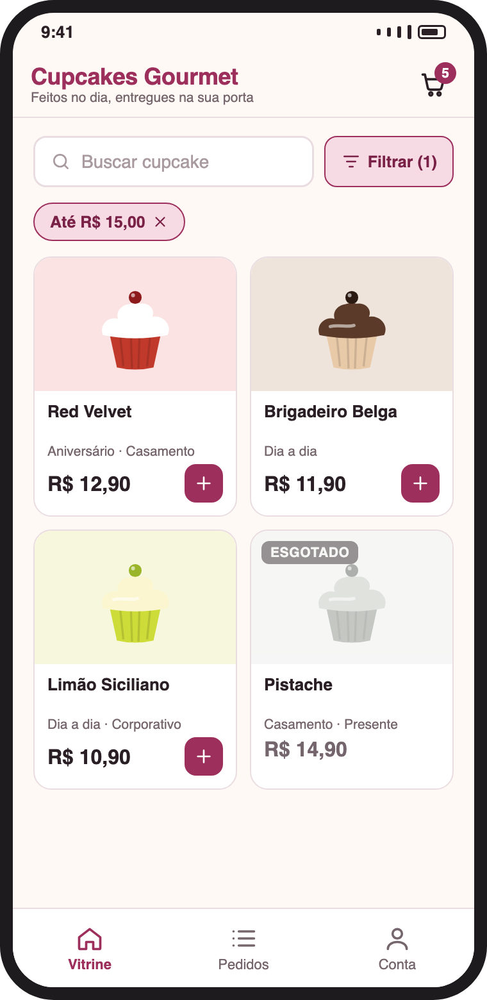
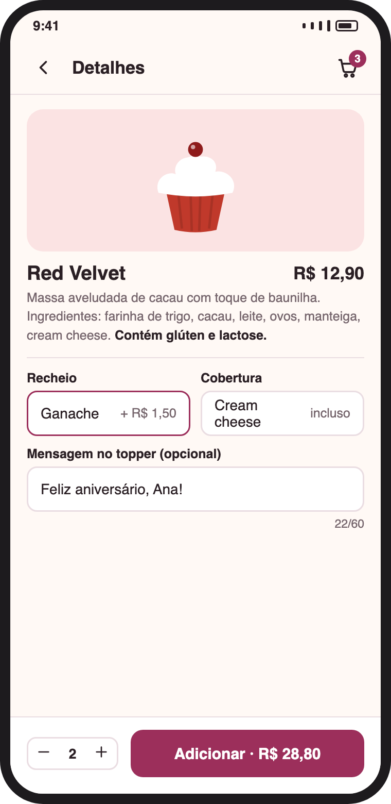
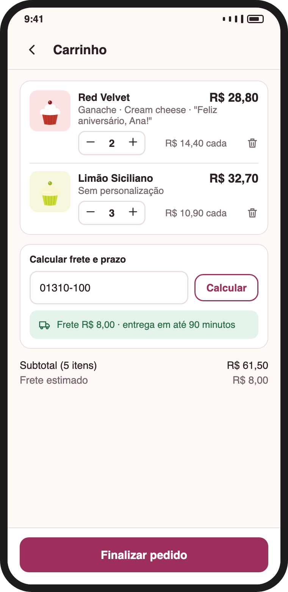
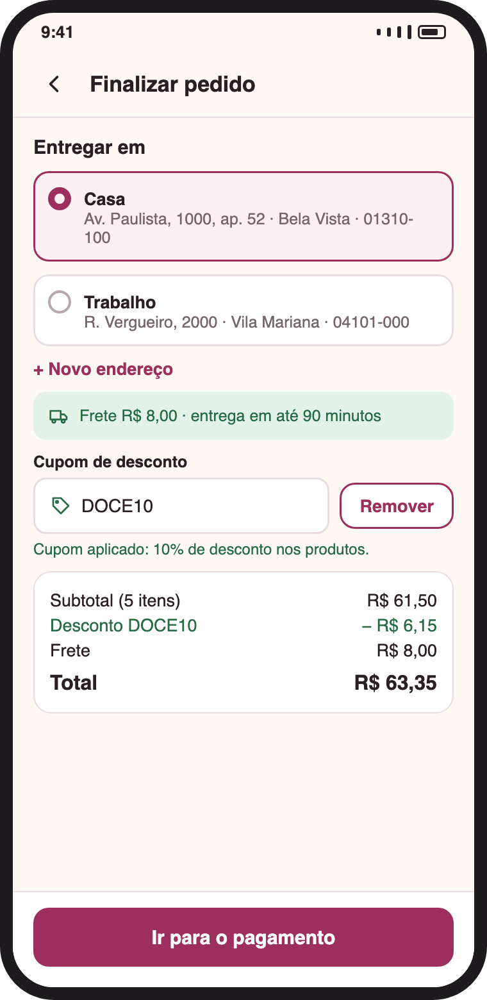
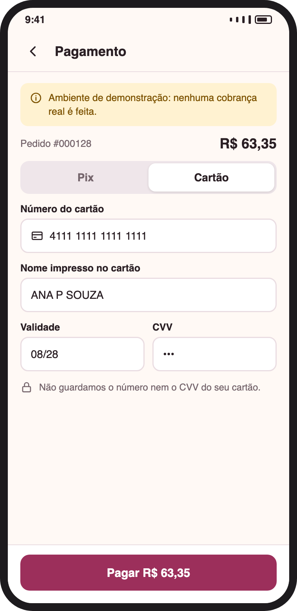
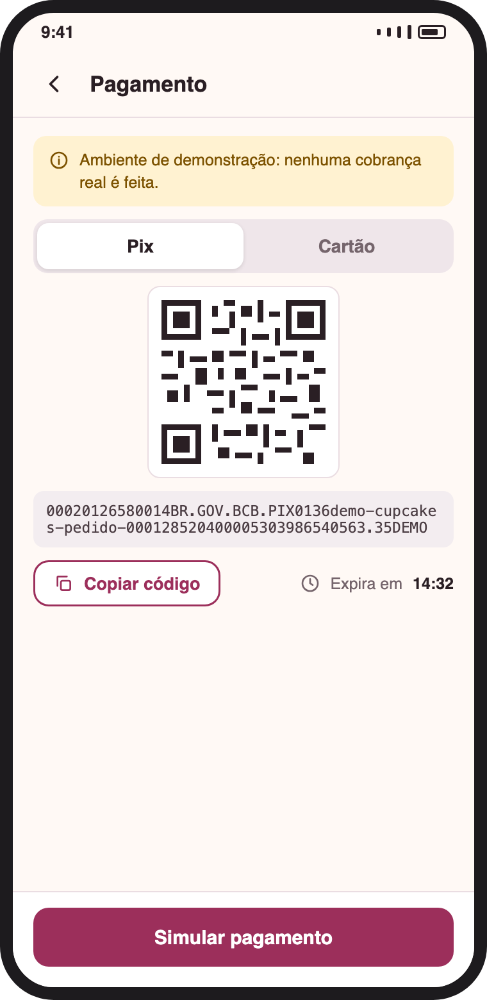
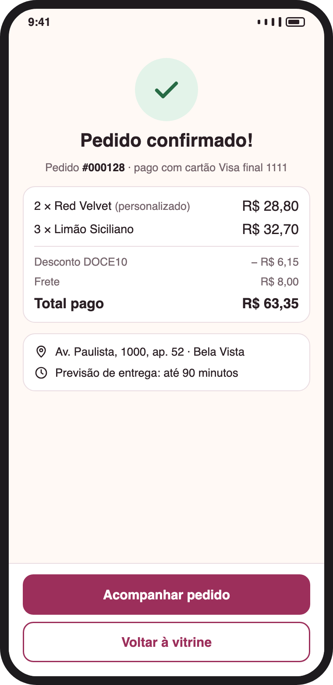
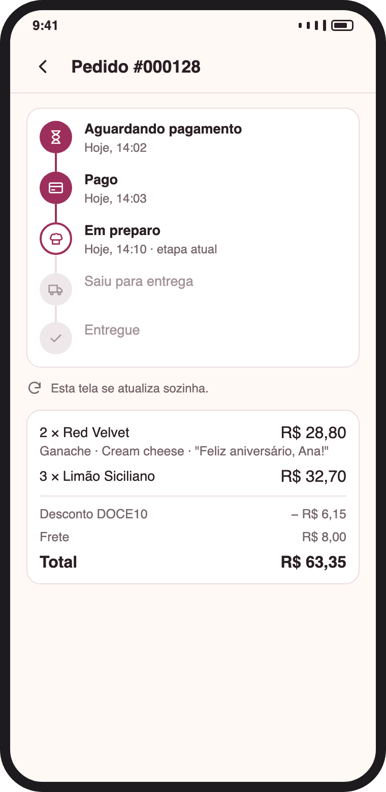
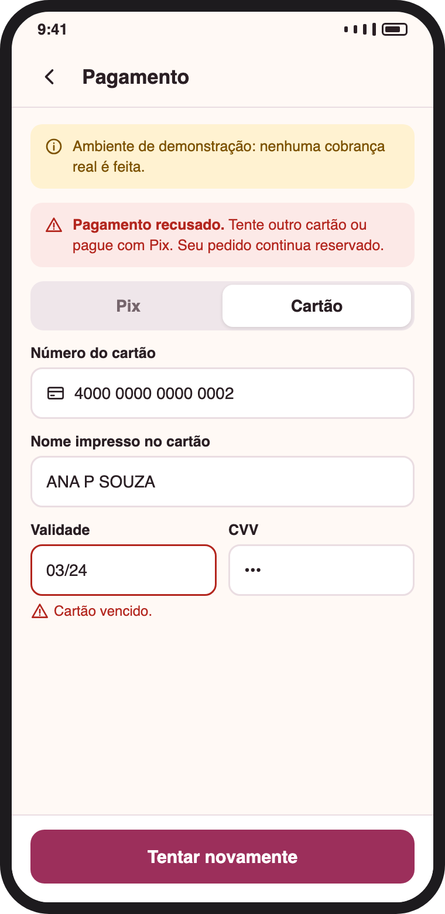
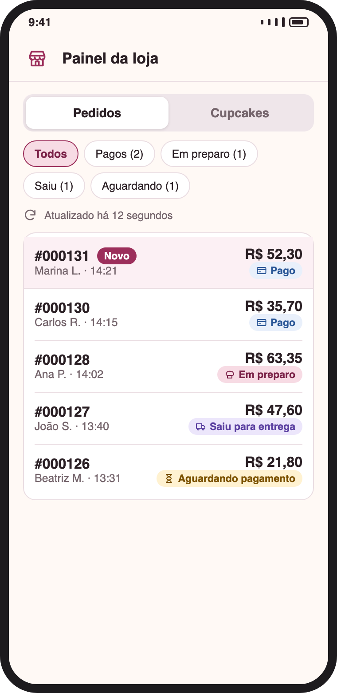
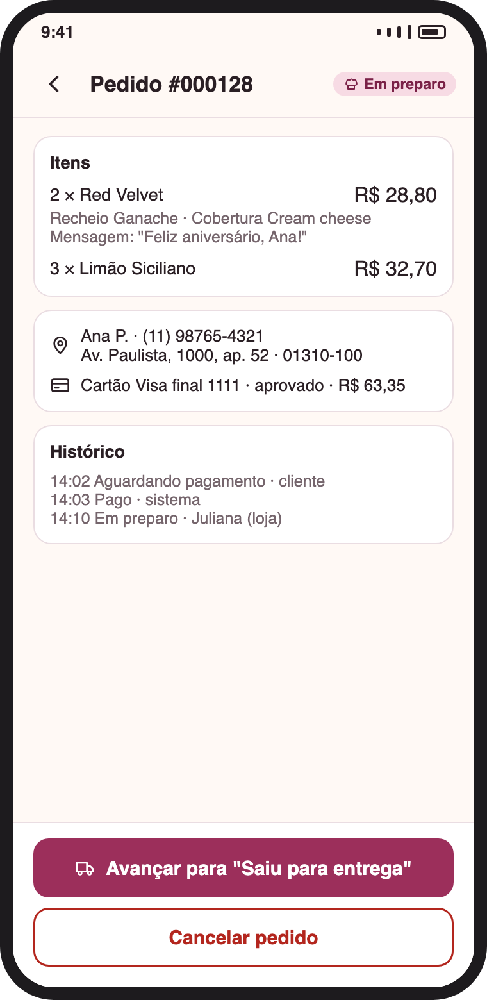
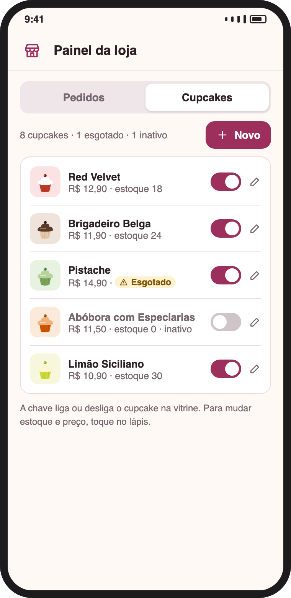
Como se vai de uma tela para outra. Linhas tracejadas são caminhos de erro. São 21 telas no total; as que não aparecem nas páginas anteriores são variações (filtros, entrar, criar conta, novo endereço, estados vazios e confirmações).
Casos de uso — visão de compra
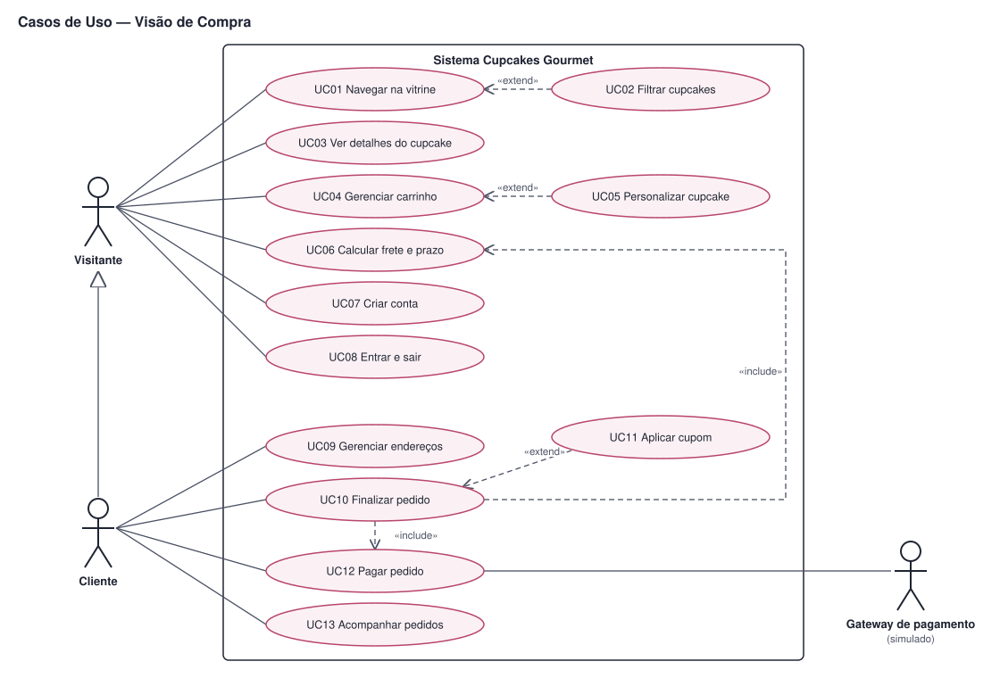
Arquitetura MVC
15 tabelas no PostgreSQL. O banco já foi criado e testado: recusou 30 de 30 tentativas de gravar dados inválidos. Gire a página para ler.
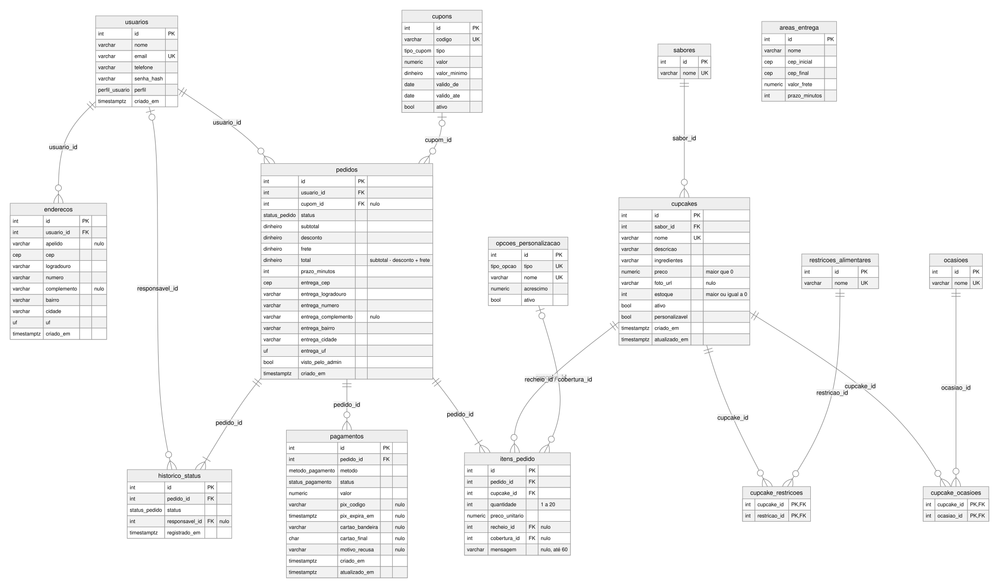
Responda aqui, por mensagem ou por áudio, como preferir. Não precisa responder todas.
| Seu nome | |
|---|---|
| Vínculo (ex.: colega do curso, desenvolvedor) | |
| Data | |
| Posso citar seu nome no trabalho? | ( ) Sim, nome completo ( ) Só as iniciais ( ) Não |
( ) Sim, pode me chamar ( ) Não, obrigado
Obrigado pela ajuda! Seus dados serão usados apenas para registrar a avaliação neste trabalho acadêmico.